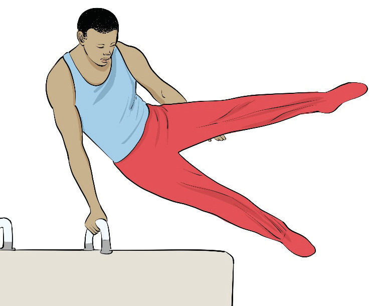
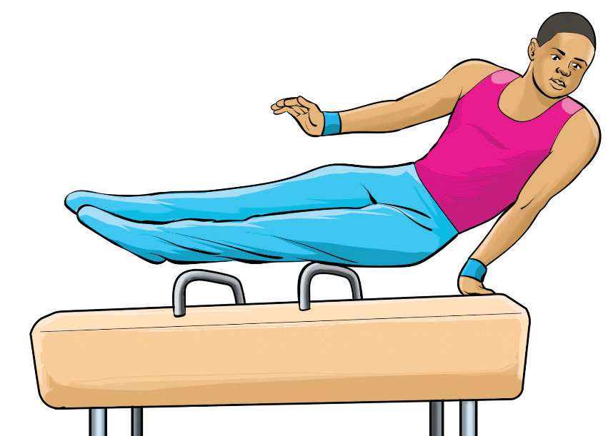

Swing-off dismount
A swing-off dismount is a type of gymnastics dismount in which the gymnast uses a swinging motion to build momentum and then releases the apparatus to land on the floor. The following steps will help you practice swing-off dismounting from a pommel horse:
- (i) Swing both legs and push off the pommel horse with momentum, Figure 4.25; and
- (ii) As you leave the pommel horse, rotate and land cleanly with soft knees.
